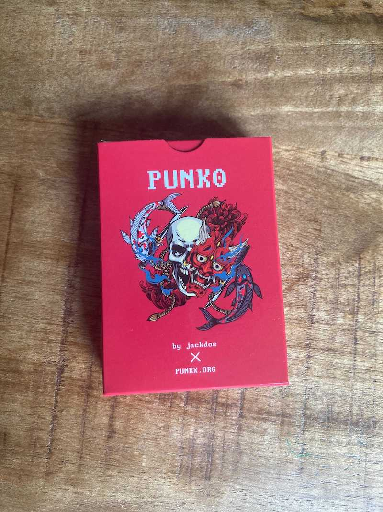
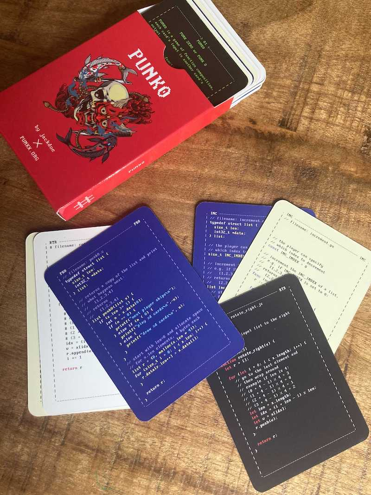
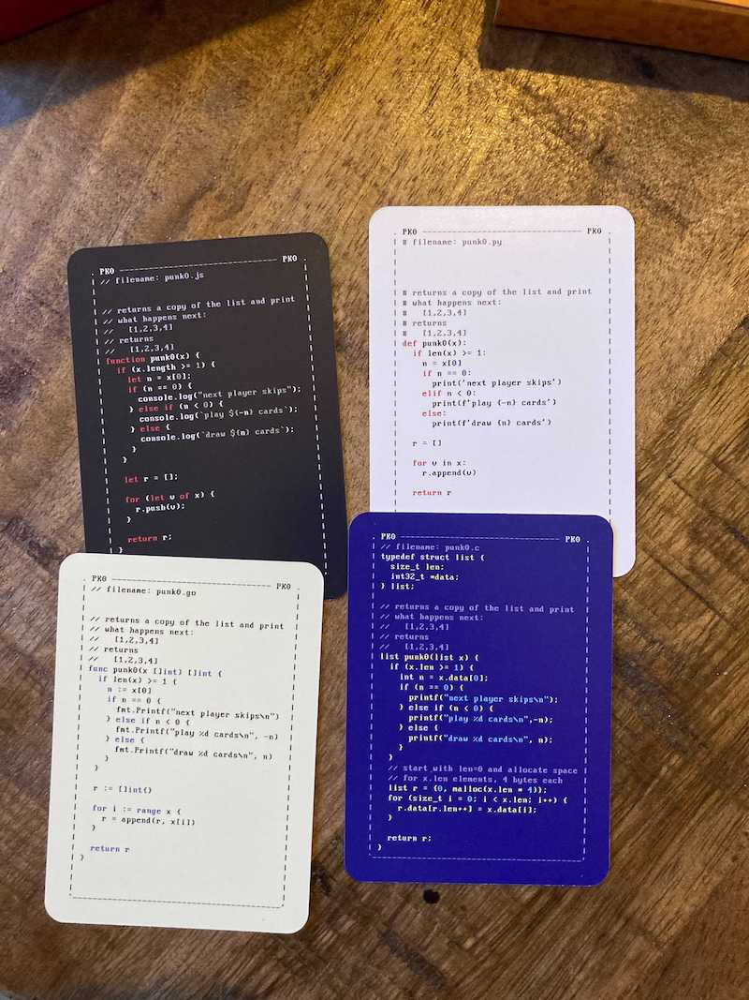
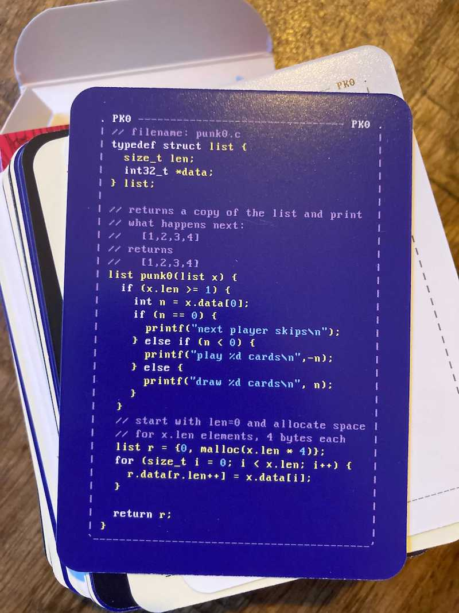
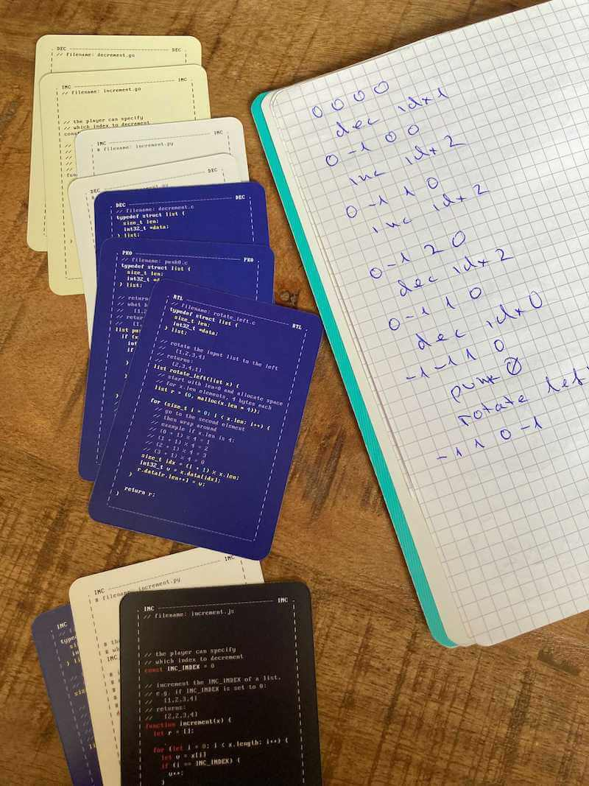
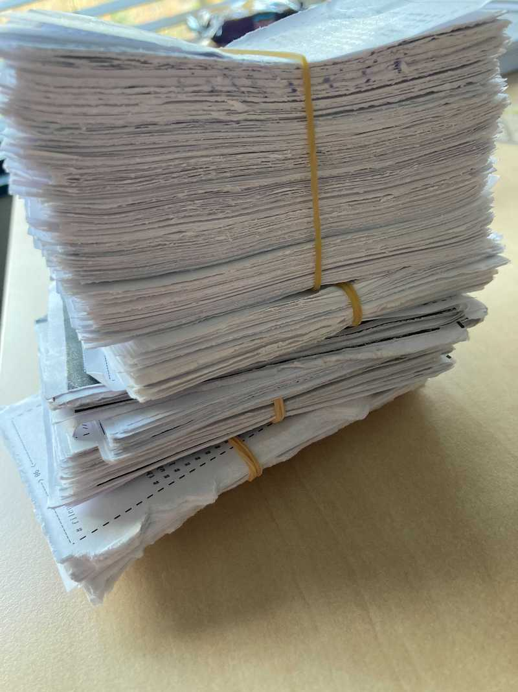

PUNK0 - A FUNCTION COMPOSITION CARD GAME
Kind of like UNO for deveopers, but also with strategy.
Each card's output is another card's input.




Buy now: €5,00 EUR
Each card has a function on it, each function is written in 4 languages: c, go, python, js. The game starts with the list [0, 0, 0, 0]. You must play either the same function in a different language, or any function in the same language as the previous card. Each card takes a list and return a list, and there are punk0, punk1, punk2, punk3 cards that print what you should do depending on the appropriate index of the list. For example if the list gets to [0, -2, 1, 3] and you play punk1(x), which operates on index 1 of the list, in this case having value -2, you must play 2 more valid cards, or draw from the deck.
RULES
- The starting list is: [0, 0, 0, 0]
- Each player starts with 8 cards, the youngest player goes first and they can play any card they choose.
- Players can either play the same function in a different language or any function in the same language as the previous card.
- Players must play a matching card if they have one, otherwise they must draw one card from the deck.
- If a player is required to draw one or more cards as a result of a punk() card or because they don't have a matching card, they must play one of the cards they drew if it is a playable card.
- The first player to finish their cards wins the game.
There is also an easy mode: play as if increment/decrement, rotate_left/rotate_right punk0/punk1/punk2/punk3 are the same function.
PUNK CARDS
- punk0():
The card will determine the next
action based on the first element
(index 0) of the list.
- If the value of the first element is zero, the next player will skip their turn.
- If the value is negative, the current player must play exactly N cards in the same turn, where N is the absolute value of the element. If they are unable to play N cards, they must draw from the deck.
- If the value is positive, the next player must draw N cards from the deck, where N is the value of the element, unless they have a punk0 card, in which case they can forward
the penalty to the next player.
- punk1() punk2() punk3():
Same as punk0(), but using the
appropriate index of the list, punk1
uses index 1 and so on.
This is how example round looks:

I worked on this game mainly to teach my daughter that knowing many languages is not very important, what you need to know is how things work, also what they represent, and especially, how the computer sees them. Also to start building intuition about rotating and manipulating pieces of memory. If you are a parent teaching your kid, and is exploring more tools to help you, I made few other card games:
- programming time, which is a game to teach python and some more fundamental algorithms, from hash tables to RSA
- The C Pointer Game - Pointers, Arrays and Strings, a game to teach kids to look at the computer memory and understand references and values
- 4917, a game to teach kids machine code and how the cpu works with memory and registers
- programming for kids, a log of my journey of teaching my daughter how to code
- The Unix Pipes Game, a game to teach kids to use basic UNIX commands:
cat, sort, grep, head, tail, wc, uniq
- The Unix Pipes Game - Process Substitution, an expansion of the unix pipes game to teach process substition and also:
paste, tr, cut, bc
- RunLength Encoding for Kids, use cards "game" to explain runlength encoding
Symbols and Colors:
- The demons on the cover represent the 4 languages, C being the skull, go is the mask, and the two fishes are js and python. I think its funny how everything we do circles around C, the further you move away (pytorch for example) the harder it pulls you in. Some day maybe we will get enough escape velocity and build new paradigms that are not just C with some suggar.
- the celtic patter on the back of the box represents how everything in CS is connected, and knowledge and understanding can be built in many ways (Richard Feynman - The Relation of Mathematics to Physics)
- the colors of the cards:
- c: I tried to go for old school Borland C++ 3.1 for DOS look, which is very close to my heart, I think it was possibly the best IDE I have ever used.
- go: I used ACME's colors, but added a bit of color for the keywords. Even though I dont use syntax highlighting, I think people will find it weird to have zero colors in code.
- js: inspired by hackerrank's dark theme.
- py: inspired by github's light theme.
- Immutable: all the functions return a new list, it felt weird for the cards to mutate the input list.
Thanks:
This is possibly the 30th version of the game, and its really fun (I think), we printed and tried many versions and I want to thank my friends who helped me test it: ronen, peter, maarten, angel, mattias, tarek, deo, evanji, melore, aymeric and many others who I annoyed with playing the boring versions :D .. here are some of the failed attempts:

PS: No LLM was used for the cards, but I did use some ChatGPT to help me rephrase the rules, since english is not my native language and I do struggle with expressing my ideas especially when the space is so limited.